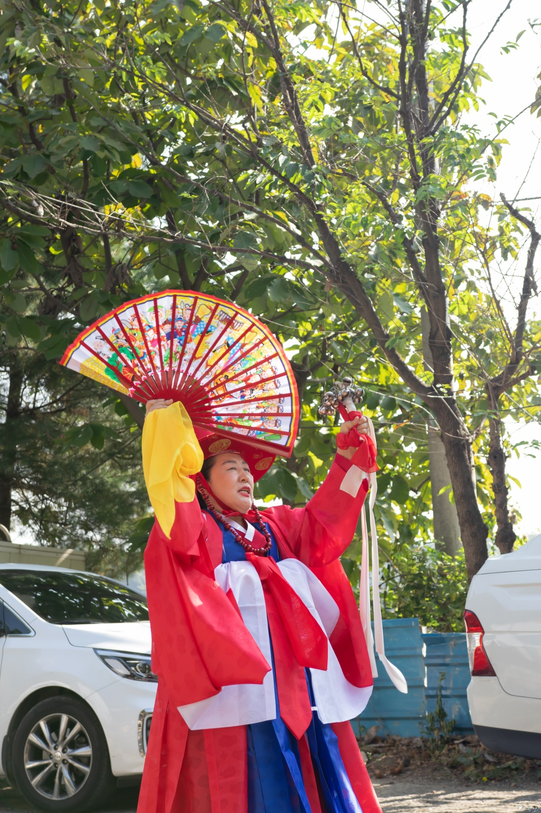
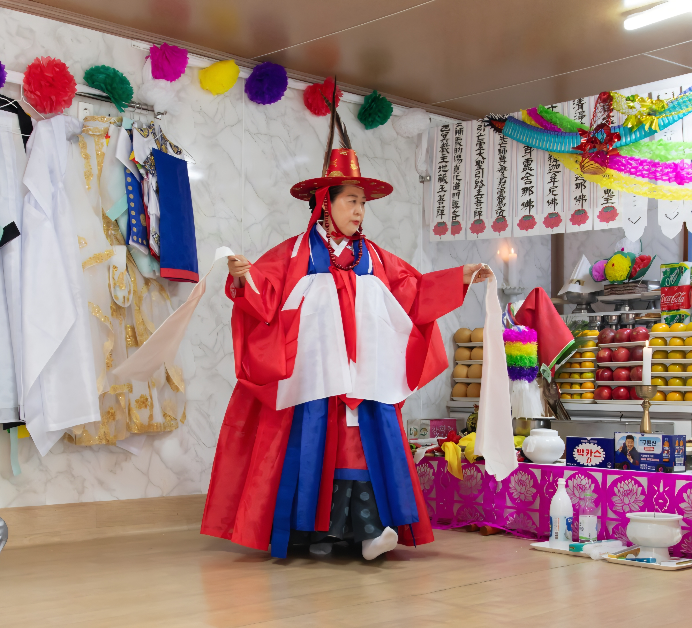
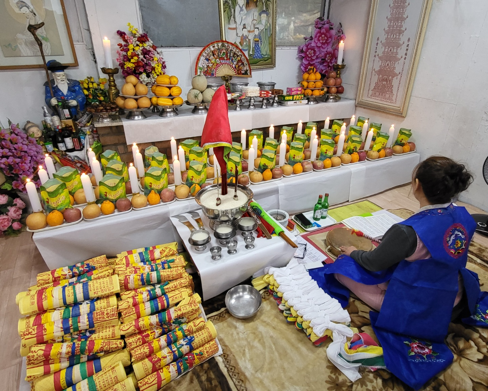
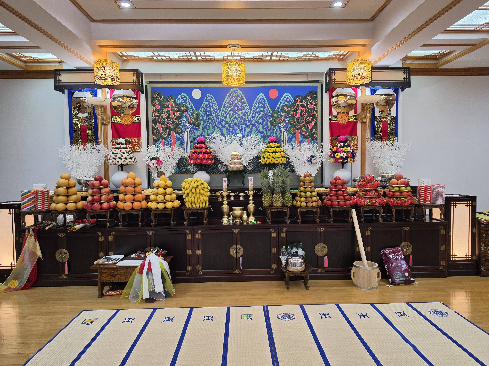
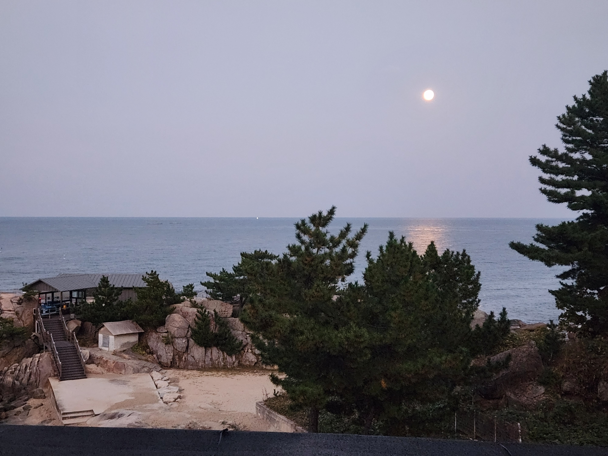

정성을 다해,
당신의 이야기에 귀 기울입니다.
삶의 갈림길에서 마음을 정돈하고 싶은 순간, 서린궁은 진심을 담아 함께합니다. 신의 말씀을 올바르게 전하고자 하는 마음으로 한 분 한 분의 사연을 경청합니다.
상담은 사전 예약제로, 전화 또는 방문 상담으로 진행됩니다.
상담 예약 창 열기 →정성과 기도가 머무는 순간
서린궁의 공간과 의식의 모습을 소개합니다.




서린궁에서 상담을 시작하세요
상담 예약은 아래 버튼 또는 전화로 문의해 주세요.
상담 예약하기010 · 8347 · 4727네이버 지도에서 오시는 길 보기인천 부평구 장제로 249번길 10-2, 201호 · 예약 후 방문 부탁드립니다.